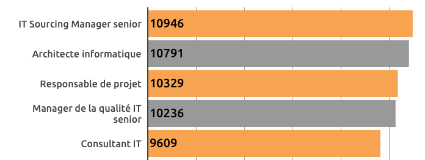
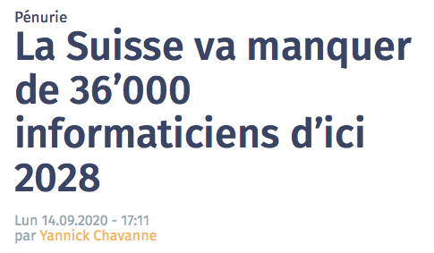

Á quoi ça sert?¶
Il est important de se poser la question pourquoi?

pourquoi j’ai besoin de programmer ?
ça me sert à quoi ?
Comprendre notre monde¶
Nous vivons dans un monde de plus en plus numérique. Chaque jour nous
communiquons sur des réseaux
enregistrons des photos et vidéos numériques
achetons en ligne
sommes identifiés par notre visage
etc.
L”éducation numérique nous permet de
mieux comprendre ce monde numérique,
mieux choisir parmi toutes ces options,
mieux se protéger contre les dangers.
Pourquoi Python ?¶
Le langage Python vient d’être élu Programming language of the year 2020 par TIOBE. Cette distinction est donnée au langage de programmation qui a gagné le plus en popularité pendant l’année écoulée.
Python est particulièrement populaire dans les domaines
data science
machine learning
éducation
La raison ?
la facilité d’apprendre ce langage
sa productivité
Qui utilise Python ?¶
Python est utilisé par beaucoup de grandes entreprises de l’informatique :
Wikipedia
Google
Facebook
Spotify (data analysis)
Netflix (data analysis)
YouTube
Instagram (Django web)
Dropbox
NASA
CERN
Ranking TIOBE¶
Python est maintenant en position 3 dans le TIOBE ranking, et dépassera bientôt le langage Java. Voici les tops 5 langages.
C
Java
Python
C++
C#
Le salaire en IT¶
Les IT Sourcing Manager expérimentés sont les professionnels IT les mieux payés en Suisse.

Source: ictjournal.ch
Pénurie d’informaticiens¶
Les efforts pour lutter contre la pénurie d’informaticiens sont insuffisants, prévient l’association ICT-Formation professionnelle Suisse. Sans mesures supplémentaires, l’économie du pays connaîtra dans huit ans une pénurie de 35’800 spécialistes ICT.

Source: ictjournal.ch